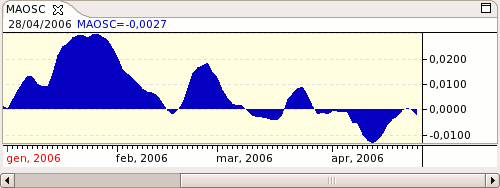

Moving Average Oscillator - MAOSC

Parameters
- Name: The text that identifies the indicator
- Color: Indicator's color
- Fast Period - The period of the fast MA
- Fast Average Type - The type of fast MA to use
- Slow Period - The period of the slow MA
- Slow Average Type - The type of slow MA to use